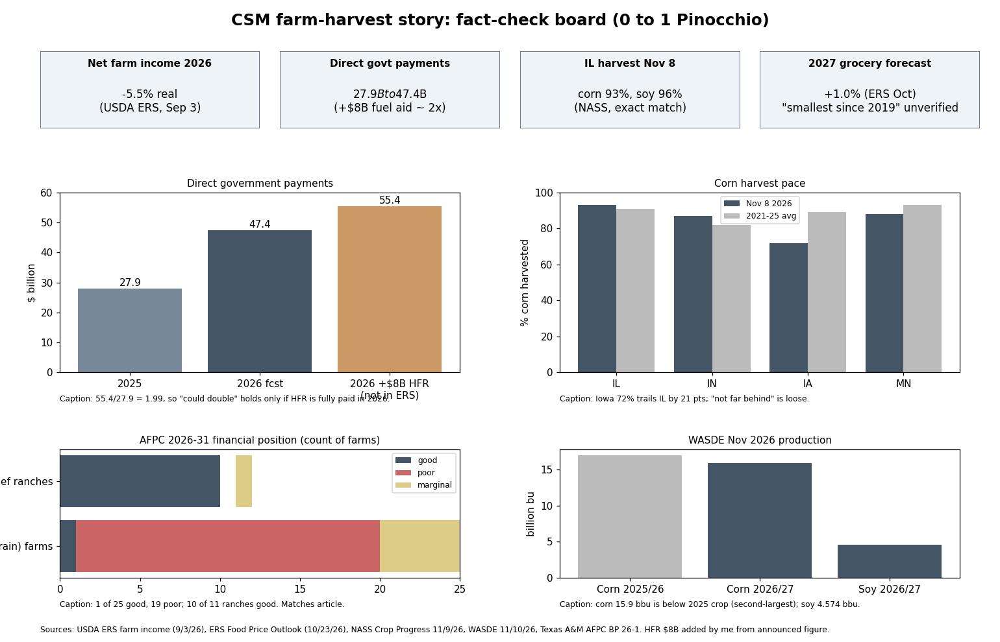

I checked 15 claims; 10 match primary USDA data, 1 is partly verified, 2 are quotes or anecdote I could not check, and 2 were not rechecked. Rating: 1 Pinocchio at most (leaning 0, "Geppetto"). No claim contradicted a source.
| Claim | Evidence | Grade |
|---|---|---|
| Grocery prices to rise 1% in 2027; smallest since 2019 | ERS Oct 2026 Food Price Outlook: food-at-home 2027 +1.0% (interval -5.2 to +7.5). Page makes no 'since 2019' statement; I could not source the historical comparison. | Partly verified (1.0% confirmed; ranking unverified) |
| Corn crop second-largest ever | WASDE 11/10/26: 15.893 bbu vs 16.964 bbu (2025/26). Second above 2023's ~15.3 bbu (from memory). | Verified |
| Soybeans on track for record | WASDE: 4.574 bbu vs 4.261 (2025/26); prior record ~4.46 (2021, from memory); forecast, not final. | Verified (forecast) |
| IL harvested 93% corn, 96% soy 'as of Sunday' | NASS Crop Progress, week ending Nov 8, 2026: IL corn 93, soy 96. | Verified exactly |
| Iowa corn lagging; Iowa/Indiana 'not far behind' | Iowa corn 72% (avg 89), Indiana 87%. Lagging true; 'not far behind' fair for Indiana, loose for Iowa (21 pts behind IL). | Mostly accurate |
| Net farm income down 5.5% real | ERS Sep 3 2026: -$9.1B, -5.5% real; nominal -2.6% to $158.4B. | Verified |
| Diesel $2.75 in Jan, now double; 275 gal = ~$1,500 | $1,500/275 = $5.45/gal, consistent with doubling. Farmer's personal figures; EIA series not retrieved for Jan 2026. EIA weekly on-highway reached ~$6.29 in Sept. | Not checkable here (personal anecdote; arithmetic consistent) |
| US and Israel attacked Iran; war raised fertilizer prices | War began Feb 28 2026; Hormuz closure disrupted fertilizer; urea about doubled through April (CGIAR, Fortune, S&P). | Verified (secondary sources) |
| Fertilizer jumped after 2022 Ukraine invasion and stayed elevated | General knowledge; not rechecked here. | Not rechecked |
| Trump announced $8B Harvest Fuel Relief 'last month', two weeks before midterms | Announced Oct 19, 2026 (Kansas rally); midterm Nov 3 = 15 days. | Verified |
| Payments could double last year's direct payments; record | ERS: $27.9B (2025) to $47.4B (2026) pre-HFR; +$8B = $55.4B = 1.99x. Conditional wording is accurate. Record-ness not separately checked. | Verified (conditional) |
| Texas A&M AFPC: 10 of 11 beef ranches good; 1 of 25 feedgrain farms good; 19 at >50% risk by 2031 | AFPC BP 26-1: 10 ranches good, 1 marginal; feedgrain 1 good, 5 marginal, 19 poor. 'Poor' means >50% chance of negative cash OR real-net-worth loss, so '>50% risk of losing net worth' slightly narrows the definition. | Verified (minor imprecision) |
| Food costs jumped more than 30% since pre-pandemic | ERS: all-food +23.6% 2020 to 2024; with 2025 (+3.1%) and 2026 forecast (~3%) compounding to ~31% vs 2020 average. BLS series not pulled. | Roughly supported (medium) |
| Ortega co-authored new research; quotes from Ortega, Ackerman, Featherstone, Legvold | Quotes are attributed to named experts; cannot be verified without interviews. Ortega's affiliation (MSU) confirmed. | Not checkable here |
| China buying American soybeans again | Not independently checked. | Not checked |
High for USDA figures; medium for secondary-sourced Iran and fertilizer context; low for the 30% food-price claim and prior-record soybean comparison (from memory).